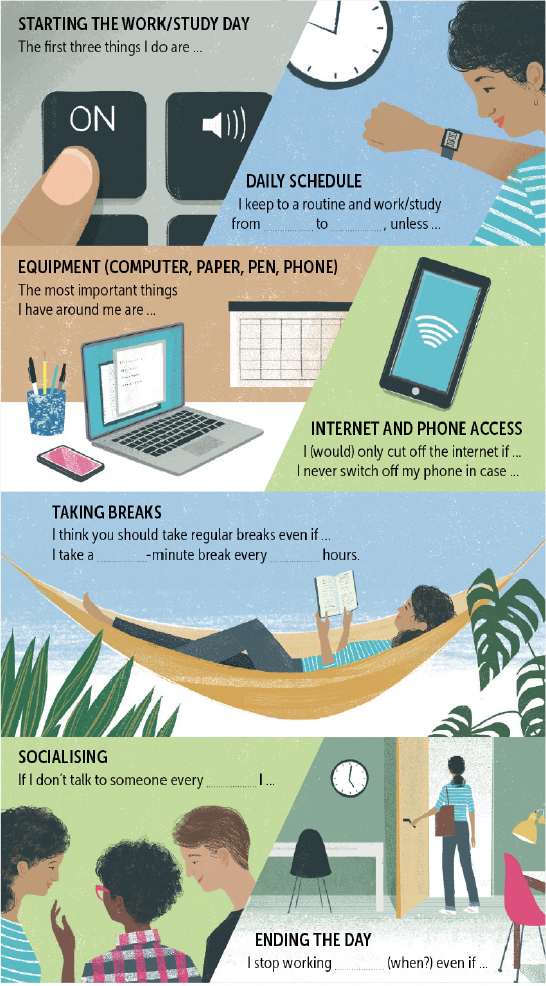

Change one letter at a time to get from HEAD to TAIL. Use the hints to help you.
1A. Complete the sentences with the present perfect continuous form of the verbs in brackets.
1B. Think of a job to go with each sentence. Write two or three sentences that this person could say at the end of a busy day. Use the present perfect continuous.
2A. Complete the phrases. Put – if it's possible to leave the gap blank.
2B. Choose one of the topics in Ex 2A. Talk about it for one minute.
3A. Add vowels to complete the phrases (1–12).
3B. Choose one of the topics. Talk about it using at least three phrases from Ex 3A.
4A. Choose the correct options (A–C) to complete the text.
Taking the pain out of the wait
Waiting in a queue 1 most people crazy, and that's bad for business. So businesses 2 a lot of effort to solve this. When high-rise buildings became common, waiting for the lift was frustrating for anyone who was in a 3, and there were lots of complaints. So mirrors were put next to the lifts and complaints dropped. An airport was 4 getting complaints about the long wait for baggage. When they moved the arrival gates further away, complaints stopped and no one got 5 about the longer walk. When a new electronic product comes out, people 6 outside a shop can be a real problem. Danish researchers found a solution: serve the last people 7 first. No other countries are 8 to try out the Danish solution – we can guess how people might 9 to it. Most people believe that first-come, first-served is fair, and anyone 10 the queue is just behaving rudely.
4B. Listen and check.
Q: Where do you prefer to work or study?
1. Watch the video. Which places do people mention?
2. Where do you like working and why? Think about: home, café, library, office, outside…
Many of those who started working from home in the past few years have discovered that it can be incredibly difficult to work efficiently. Unless you're very focused, you'll find too many distractions and excuses NOT to work.
If there's one group of people with extensive experience working from home, it's writers. Writers have long had to deal with the challenge of working from home, having to meet a deadline to finish a book and to avoid distractions that can make them fall behind schedule. And writers have been generous with their advice.
These tips could have been taken directly from the lives of great writers. Ernest Hemingway began writing at 6 a.m., because, he said, there was no one around to disturb him. Ursula K. Le Guin used to wake up at 5.30. She spent the first 45 minutes of the day lying in bed, thinking, and started writing by 7.15, finishing her day's work by lunchtime. James Bond author, Ian Fleming, started his day with a swim in the sea. Then he wrote from 9 till noon, had lunch and a nap and worked more from 5 p.m. He had a goal of 500 words per day.
In the internet era, authors' routines aren't necessarily that different from previous times. Japanese novelist Haruki Murakami says he doesn't use social media at all, and describes his work day as going from 4 a.m. till about 10, followed by a run or a swim; after that he reads and listens to music, and goes to bed at 9 p.m. However, the digital world is a big factor for many authors. Novelist Zadie Smith doesn't have a smartphone and uses internet-blocking software on her laptop in case she feels like reacting to news or messages. Australian writer Benjamin Law recommends an app which turns off your social media and internet for certain lengths of time so you don't lose concentration.
Not every author hides from the internet. Bernardine Evaristo starts her day with two cups of coffee, then goes online to catch up on the news and opinions about what's happening. She starts work after that and keeps at it till 9 p.m., but not without taking breaks to exercise and take a siesta.
And not every writer writes at home. Poet and novelist Maya Angelou couldn't. She used to check into a hotel room and put a 'Do not disturb' sign on the door before she started writing. But wherever you work, if you follow the advice of these writers and use your time wisely, you can get a lot done, or at least you can finish your work day faster and get away from your desk sooner!
1 A: This homework is really difficult. I'll do it later.
B: No, do it now. You should it .
2 A: How was your day?
B: Great, I . I finished my essay, had lunch with a friend, went to an online seminar and then played tennis.
3 A: What time will lunch be? I need to tell the people in the café.
B: Sorry, we've by about fifteen minutes. So I think it'll be at quarter past one.
4 A: Is your new job hard?
B: Yes, but I enjoy with a .
5 A: You look good. Where have you been?
B: For a swim. I always : 6 o'clock get up, 6.30 go for a swim.
6 A: Is it OK if I turn the TV on?
B: Well, not really. I'm trying to . The sound of the TV would bother me.
7 A: What's wrong?
B: It's that music from next door. It's making me . I can't think!
8 A: We've only got two days to finish the report!
B: Yes, do you think we'll ?
unless
We use unless to mean if not.
Unless you hurry up, we're going to leave without you.
(If you don't hurry up, we're going to leave.)
Please don't park here unless you're a member of staff.
When the unless clause is first, use a comma:
Unless she speaks slowly, I can't understand Liz.
When the unless clause is second, no comma:
I can't understand Liz unless she speaks slowly.
even if
We use even if for emphasis — to say something will not change a situation.
Even if the company pays me twice as much, I'm going to leave.
I'll never speak to her again even if she says sorry.
When both clauses are long, use a comma to divide them.
in case
We use in case to talk about being prepared for the possibility that something might happen.
Take your umbrella in case it rains.
I'll make some sandwiches just in case we get hungry later.
The in case clause is usually second. No commas.
in case of
We use in case of + noun in formal situations — 'if something happens'. Usually about bad or dangerous situations.
In case of fire, break the glass.
In case of bad weather, the ceremony will be held indoors.
The in case of clause usually comes first.
Use unless / even if / in case + present tense for present/future:
I can't help you unless you tell me the problem.
unless you'll tell me
Use past tenses for hypothetical situations:
Even if I won a million euros, I wouldn't change my job.

The first three things I do are …
I keep to a routine and work/study from _______ to _______, unless …
The most important things I have around me are …
I (would) only cut off the internet if …
I never switch off my phone in case …
I think you should take regular breaks even if …
I take a _______-minute break every _______ hours.
If I don't talk to someone every _______ I …
I stop working _______ (when?) even if …